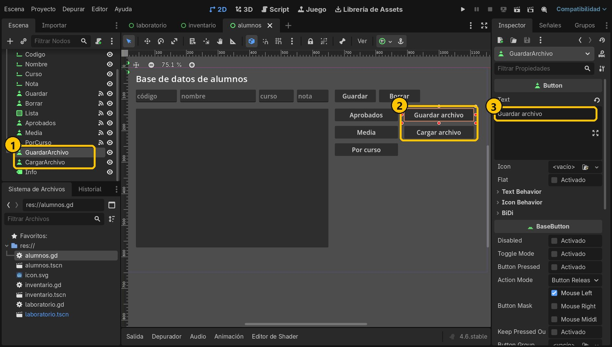
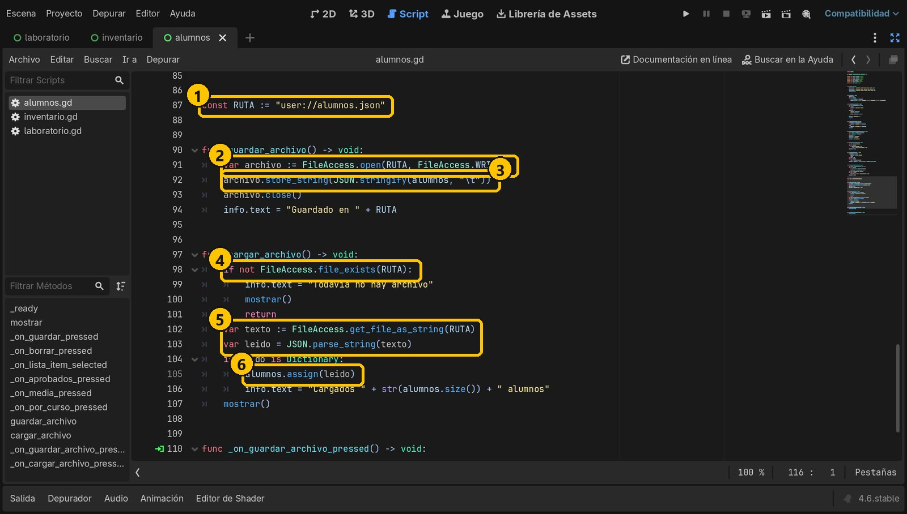
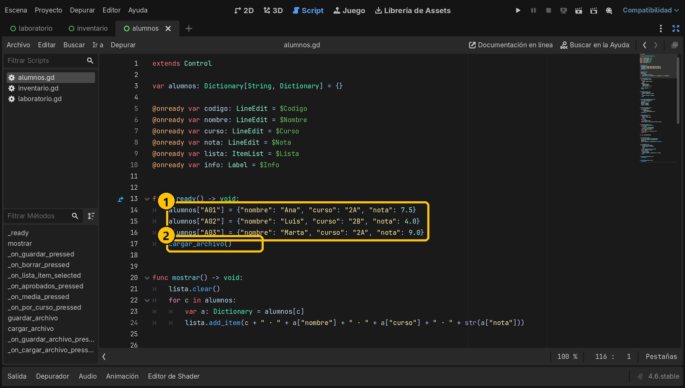
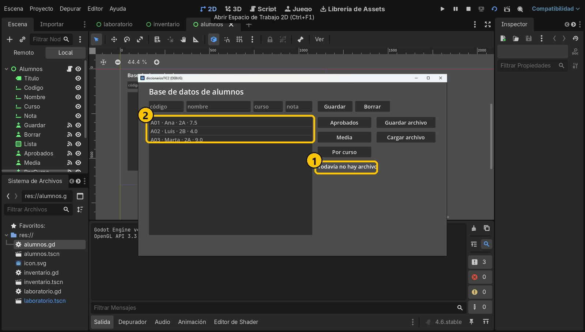
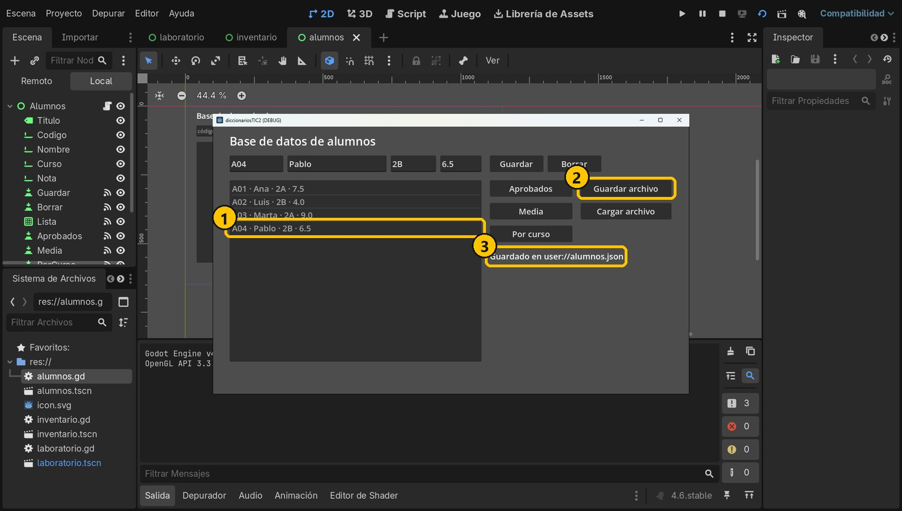
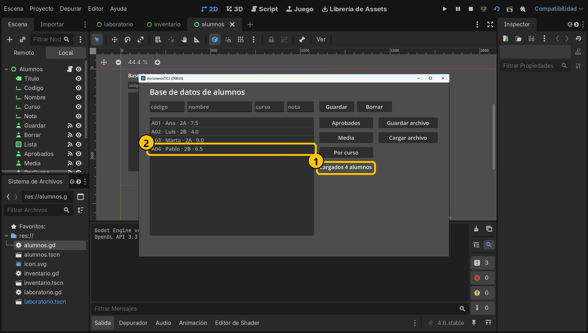
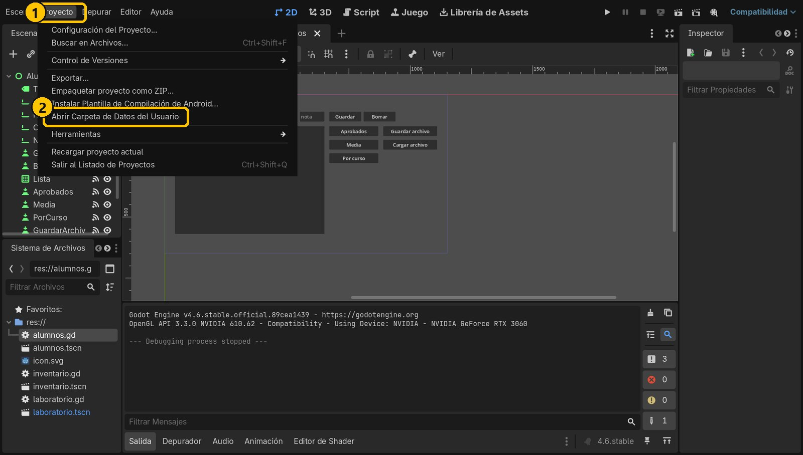

Objetivo
Al terminar, los alumnos que des de alta seguirán ahí aunque cierres el programa: se guardan en user://alumnos.json y se cargan al abrir.
Partimos de: El proyecto del tutorial 4 (base de datos de alumnos).
Conceptos clave
JSONFormato de texto casi igual que un diccionario: llaves, claves entre comillas, dos puntos.
JSON.stringify() / JSON.parse_string()Diccionario → texto / texto → diccionario.
FileAccessAbre, escribe y lee archivos.
user://Carpeta del usuario donde el juego siempre puede escribir.
Paso a paso
1Dos botones nuevos
Abre alumnos.tscn y añade dos Button: GuardarArchivo («Guardar archivo») y CargarArchivo («Cargar archivo»). Conecta la señal pressed de los dos a Alumnos.

- 1Botones nuevos
- 2En la interfaz
- 3Su texto
2Guardar y cargar el archivo
Añade al final del script la ruta y las dos funciones. Para guardar: abrir en modo escritura, convertir el diccionario en texto JSON y escribirlo. Para cargar: comprobar que existe, leer el texto, convertirlo en diccionario y copiarlo en alumnos con assign().
const RUTA := "user://alumnos.json"
func guardar_archivo() -> void:
var archivo := FileAccess.open(RUTA, FileAccess.WRITE)
archivo.store_string(JSON.stringify(alumnos, "\t"))
archivo.close()
info.text = "Guardado en " + RUTA
func cargar_archivo() -> void:
if not FileAccess.file_exists(RUTA):
info.text = "Todavía no hay archivo"
mostrar()
return
var texto := FileAccess.get_file_as_string(RUTA)
var leido = JSON.parse_string(texto)
if leido is Dictionary:
alumnos.assign(leido)
info.text = "Cargados " + str(alumnos.size()) + " alumnos"
mostrar()
func _on_guardar_archivo_pressed() -> void:
guardar_archivo()
func _on_cargar_archivo_pressed() -> void:
cargar_archivo()
- 1user://alumnos.json
- 2Abrir para escribir
- 3Diccionario → texto
- 4¿Existe?
- 5Texto → diccionario
- 6Copiar en alumnos
3Cargar al empezar
En _ready(), cambia la última línea: en vez de mostrar(), llama a cargar_archivo() (que ya llama a mostrar). Si hay archivo, sus datos sustituyen a los de ejemplo.
func _ready() -> void:
alumnos["A01"] = {"nombre": "Ana", "curso": "2A", "nota": 7.5}
alumnos["A02"] = {"nombre": "Luis", "curso": "2B", "nota": 4.0}
alumnos["A03"] = {"nombre": "Marta", "curso": "2A", "nota": 9.0}
cargar_archivo()
- 1Datos de ejemplo
- 2Si hay archivo, manda
4Primera ejecución
Ejecuta con F6. La primera vez aún no hay archivo y ves los alumnos de ejemplo.

- 1Aún no hay archivo
- 2Datos de ejemplo
5Guarda en el archivo
Da de alta a A04 Pablo 2B 6.5, pulsa Guardar y después Guardar archivo.

- 1Pablo
- 2Guardar archivo
- 3Guardado
6Cierra y vuelve a abrir
Cierra la ventana del programa y ejecútalo otra vez: «Cargados 4 alumnos». Pablo sigue ahí.

- 1Cargados 4
- 2Pablo sigue
7¿Dónde está el archivo?
Menú Proyecto → Abrir Carpeta de Datos del Usuario. Abre alumnos.json con el Bloc de notas: es tu diccionario escrito como texto.
{
"A01": {
"curso": "2A",
"nombre": "Ana",
"nota": 7.5
},
...
}
- 1Proyecto
- 2Carpeta de datos
Resumen
JSON.stringify()convierte el diccionario en texto.JSON.parse_string()lo devuelve a diccionario.FileAccesslo guarda enuser://, que no se borra al cerrar.
Si algo falla
- Un 4 vuelve como 4.0. En JSON todos los números se leen como decimales (
float). Si necesitas un entero, conviértelo conint(). - No carga nada y no da error. Comprueba que pulsaste Guardar archivo y que la ruta es la misma en las dos funciones (usa la constante
RUTA). - Error «Invalid call. Nonexistent function 'store_string' in base 'Nil'».
FileAccess.open()ha fallado y devolviónull. Usa una ruta que empiece poruser://.
Prueba tú
- Guarda automáticamente: llama a
guardar_archivo()al final de Guardar y de Borrar. - Añade un botón Exportar que guarde solo los aprobados en
user://aprobados.json. - Guarda también la fecha del último guardado y muéstrala al cargar (
Time.get_datetime_string_from_system()).